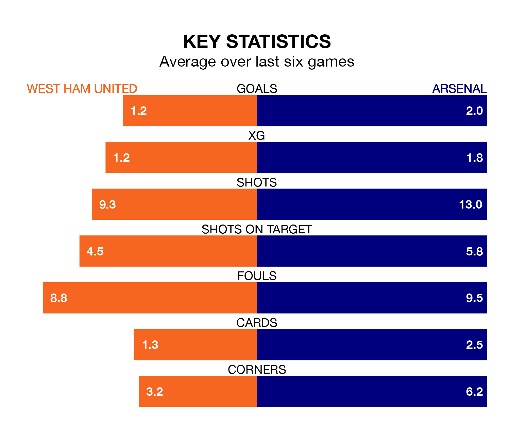

Arsenal are strong favourites to take all three points despite West Ham United's home advantage in Sunday's early match at the London Stadium.
*Betting Company* are offering odds of 1.7 on Arsenal sealing the win, with the visitors sitting second in the Premier League table.
West Ham, who are seventh in the league and 13 points behind the Gunners, are priced at 4.75 to win. A draw is set at 3.9.
With 47 goals in 23 games so far this season, Arsenal are scoring more than average in the league with 2.0 goals per game. And they are conceding fewer than average, letting in 22 goals at a rate of 1.0 per game.
West Ham, meanwhile, are average scorers, with 1.6 goals per game. They have also conceded 1.6 goals per game.
In the last 10 years, West Ham and Arsenal have played each other on 22 occasions. West Ham won four of them, Arsenal 14, and they drew four times.
On average, the Hammers scored 1.1 goals and the Gunners 2.1 in those matches.
Their last meeting was on December 28, when West Ham won 2-0 away.
In David Raya, the Gunners can rely on one of the league's safest pair of hands. He has kept six clean sheets in his 18 appearances this season in the Premier League.
In United's net, Alphonse Areola has four clean sheets in 20 games. He has conceded a goal every 68 minutes, 30% more often than the 90 minutes between goals for Raya Martin.
The Hammers are in mixed form in the Premier League, with two wins and three draws from their last six games.
With three wins and a draw over that period, the visitors' form is slightly better – they have taken 10 points from 18, compared to the home team's nine.
West Ham's last match was on February 4, a 3-0 loss against Manchester United.
Arsenal beat Liverpool 3-1 last time out, also on Sunday, with Bukayo Saka, Gabriel Martinelli and Leandro Trossard on the scoresheet.
Updated: 13:52 (UTC), 05/02/24